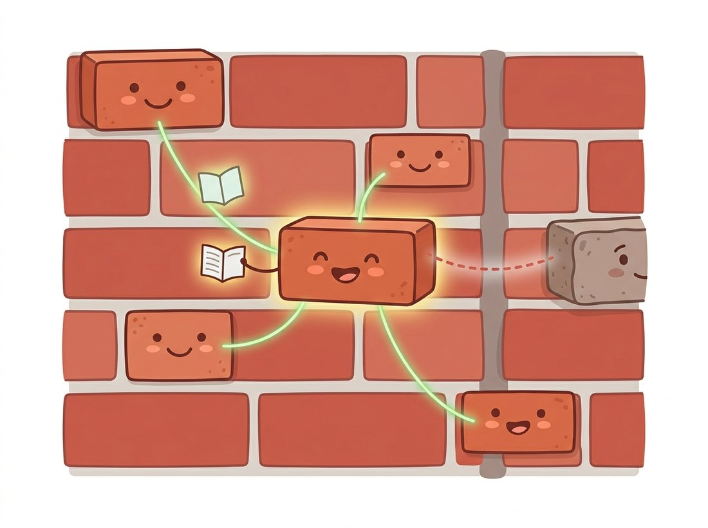

"Why should I average my neighbors just because they live next door? Somewhere across this image are patches that actually understand me."
A Non-Local Means Filter With High Standards
Denoising is the art of averaging the right pixels: every classical denoiser is a different answer to the single question "which pixels can be trusted to share a value?" The ladder climbs from spatial proximity (Gaussian), through robust proximity (median) and similarity-gated proximity (bilateral), to patch self-similarity anywhere in the image (non-local means and BM3D). Each rung encodes a sharper prior about what natural images look like, and the top rung held the state of the art for a full decade until neural networks learned to climb past it.
Section 7.1 built the damage: we can now synthesize noise with known statistics and score any attempted cure with the PSNR and SSIM metrics from Chapter 1. This section attempts the cure itself. We start from the humble filters of Chapter 3, reread them as denoisers, and then make the conceptual leap that defined classical denoising's final and best decade: the realization that a pixel's most trustworthy relatives usually do not live next door.
1. Averaging and Its Discontents Beginner
All denoising rests on one statistical fact. If you average $N$ independent measurements of the same underlying value, each corrupted by noise of standard deviation $\sigma$, the average has noise $\sigma / \sqrt{N}$. Average a hundred honest copies of a pixel and the noise drops tenfold. The entire difficulty of denoising hides inside the phrase "of the same underlying value": the clean image is exactly what we do not have, so we never know for certain which pixels share a value. Every algorithm in this section is a strategy for guessing.
Guess too generously and you average pixels that do not belong together: an edge pixel gets blended with the other side of the edge, and noise reduction becomes blur. Guess too cautiously and you average too few samples, leaving noise behind. This is the denoiser's version of the bias-variance tradeoff: aggressive averaging trades variance (noise) for bias (lost structure). The history of classical denoising is the history of finding more pixels to average without inviting the wrong ones, and you can read the whole section as a progression of increasingly clever invitation lists.
2. The Local Family, Reread as Denoisers Beginner
Chapter 3 introduced the Gaussian, median, and bilateral filters as general smoothing tools. Viewed as denoisers, each is an invitation policy. The Gaussian filter invites every pixel within a spatial radius, weighted by distance: its prior says images are smooth everywhere, which is false at every edge, and the result is the familiar tradeoff of clean flat regions bought with smeared boundaries. The median filter invites the same neighbors but takes a vote instead of an average, which makes it nearly immune to the impulse noise of Table 7.1.1: a dead pixel is an outlier, and medians ignore outliers. The bilateral filter adds a second gate: a neighbor is invited only if it is both spatially close and tonally similar, so averaging stops at edges. Code 7.2.1 runs all three against the same Gaussian-noised test image so we have concrete numbers to argue about.
# Run the three local filters on one Gaussian-noised image and score each by PSNR.
# scikit-image supplies the filters, the test image, and the PSNR metric.
import numpy as np
from skimage import data, img_as_float
from skimage.filters import gaussian, median
from skimage.morphology import disk
from skimage.restoration import denoise_bilateral
from skimage.metrics import peak_signal_noise_ratio as psnr
rng = np.random.default_rng(seed=7)
clean = img_as_float(data.camera()) # 512x512 grayscale
noisy = np.clip(clean + rng.normal(0, 0.10, clean.shape), 0, 1)
results = {
'noisy': noisy,
'gaussian': gaussian(noisy, sigma=1.2),
'median': median(noisy, footprint=disk(2)),
'bilateral': denoise_bilateral(noisy, sigma_color=0.15, sigma_spatial=3),
}
for name, img in results.items():
print(f"{name:9s} PSNR = {psnr(clean, img):.1f} dB")
noisy PSNR = 20.2 dB gaussian PSNR = 26.5 dB median PSNR = 25.6 dB bilateral PSNR = 26.9 dB
The bilateral filter's waxiness is worth understanding because it motivates everything that follows. The tonal gate works well at high-contrast edges, where "similar intensity" reliably means "same side of the edge." But in low-contrast texture, noise itself decides who looks similar: the filter averages pixels whose intensities happen to match by chance, producing the smooth, plasticky patches that photographers call the watercolor effect. The deeper problem is that a single noisy pixel value is a terrible identity card. Two pixels from the same structure can differ wildly because of noise; two pixels from different structures can match by accident. We need a richer description of who a pixel is.
Each filter's invitation policy is an assumption about natural images stated in code. Gaussian: images are smooth. Median: images are locally constant with occasional outliers. Bilateral: images are piecewise smooth with sharp boundaries. Non-local means, coming next: images repeat themselves. BM3D: images repeat themselves and are sparse in a transform domain. When a denoiser fails on your data, the productive question is never "which filter is best" but "which of these beliefs is true of my images." The same question, with "belief" replaced by "training distribution," is how you will debug learned denoisers in Chapter 21 and beyond.
3. Non-Local Means: Averaging by Resemblance Intermediate
The 2005 insight of Buades, Coll, and Morel reads obvious in hindsight, as the best insights do. Natural images are massively self-similar: a brick wall contains hundreds of nearly identical bricks, a face has two matching eyebrows and acres of similar skin, a sky repeats itself almost everywhere. Each repetition is an independent noisy measurement of nearly the same content. So instead of identifying a pixel by its single noisy value, identify it by the small patch around it, and average it with every pixel in the image whose surrounding patch looks alike, regardless of where that pixel lives. The estimate for pixel $p$ becomes
$$ \hat f(p) = \frac{1}{Z(p)} \sum_{q} w(p, q) \, g(q), \qquad w(p, q) = \exp\!\left( -\frac{\lVert P(p) - P(q) \rVert_2^2}{h^2} \right), $$where $P(p)$ is the patch of pixels centered on $p$, $Z(p) = \sum_q w(p,q)$ normalizes the weights, and $h$ controls how strict the resemblance test is. Patches that match closely get weight near one; patches that differ get exponentially suppressed. Figure 7.2.1 contrasts this with the local filtering policy above: the bilateral filter asks "who is nearby and similar in value," while non-local means (NLM) asks "who, anywhere, is living the same life." The brick-wall analogy below captures that shift in who a noisy pixel is allowed to trust.

Code 7.2.2 is a deliberately naive implementation, four nested loops and no tricks, because the algorithm fits in fifteen readable lines and reading it teaches more than any description. Run it on a small crop; the full image would take minutes, which is itself a lesson about why the optimized library versions exist.
def nlm_gray(img, patch=7, window=8, h=0.12):
"""Educational non-local means for float grayscale images.
Searches a (2*window+1)^2 neighborhood; O(N * window^2 * patch^2)."""
half = patch // 2
pad = half + window
p = np.pad(img, pad, mode='reflect')
out = np.empty_like(img)
for i in range(img.shape[0]):
for j in range(img.shape[1]):
ci, cj = i + pad, j + pad
ref = p[ci-half:ci+half+1, cj-half:cj+half+1]
wsum, acc = 0.0, 0.0
for di in range(-window, window + 1):
for dj in range(-window, window + 1):
cand = p[ci+di-half:ci+di+half+1,
cj+dj-half:cj+dj+half+1]
d2 = np.mean((ref - cand) ** 2) # patch distance
w = np.exp(-d2 / h ** 2) # resemblance weight
wsum += w
acc += w * p[ci + di, cj + dj]
out[i, j] = acc / wsum
return out
crop, ncrop = clean[120:184, 200:264], noisy[120:184, 200:264]
restored = nlm_gray(ncrop)
print(f"noisy crop PSNR = {psnr(crop, ncrop):.1f} dB, "
f"NLM crop PSNR = {psnr(crop, restored):.1f} dB")
Two parameters do the steering. The patch size (7x7 is the classic default) sets how much context defines a pixel's identity: too small and noise corrupts the identity card, too large and rare structures find no matches. The bandwidth $h$ sets the strictness of the resemblance test and should scale with the noise level: a common refinement subtracts the expected noise contribution from the patch distance before weighting, $w = \exp(-\max(d^2 - 2\sigma^2, 0)/h^2)$, so that two identical patches corrupted by noise still count as identical. The $2\sigma^2$ is not arbitrary: two truly identical patches each carry noise of variance $\sigma^2$, so their squared difference inflates by $\sigma^2 + \sigma^2 = 2\sigma^2$ on average even when the underlying content matches perfectly, and subtracting that floor is what stops the noise itself from making twins look like strangers. The exercises ask you to implement that version, and feeding it the $\sigma$ estimated by Code 7.1.4 closes the loop with the previous section.
Run Code 7.2.2 on the same noisy crop three times, changing only the bandwidth: h = 0.04, then 0.12, then 0.30, and display the three results next to the noisy input. Watch the single tradeoff that defines patch denoising swing in front of you. At the small h the resemblance test is so strict that almost no patches qualify, so each pixel is averaged with too few partners and the noise barely drops. At the large h nearly every patch counts as a match, distant unrelated content gets averaged in, and fine texture melts into the waxy watercolor look. The middle value is the compromise the section keeps circling, and feeling it move with thirty seconds of editing fixes the idea more firmly than the formula does. Keep patch=7 fixed for this sweep so the bandwidth is the only variable.
cv2.fastNlMeansDenoising and skimage.restoration.denoise_nl_meansBoth major libraries ship heavily optimized NLM. The thirty-odd lines of Code 7.2.2 collapse to one call each:
import cv2
from skimage.restoration import denoise_nl_means, estimate_sigma
# OpenCV: uint8 in, strength h in 8-bit gray levels (about the noise sigma)
den_cv = cv2.fastNlMeansDenoising((noisy * 255).astype(np.uint8), None,
h=25, templateWindowSize=7,
searchWindowSize=21)
# scikit-image: float in, noise-aware weighting via sigma=
sigma_est = estimate_sigma(noisy)
den_sk = denoise_nl_means(noisy, h=0.8 * sigma_est, sigma=sigma_est,
patch_size=7, patch_distance=11, fast_mode=True)
fastNlMeansDenoisingColored handles color, and OpenCV adds a multi-frame variant for video.Roughly 30 lines become 1, and the speedup is around three orders of magnitude. Internally the libraries handle the integral-image trick that computes all patch distances at a fixed offset in O(1) per pixel, the noise-compensated weighting, multithreading, and color images (where patch distance is measured across channels jointly). Use Code 7.2.2 to understand the algorithm; never ship it.
Squint at the NLM formula and you are looking at an attention mechanism more than a decade early: compare a query patch against key patches everywhere, softmax-like exponential weights, then a weighted average of values. When Chapter 22 introduces self-attention in Vision Transformers, the formula will feel familiar. The "Non-local Neural Networks" paper by Wang et al. (CVPR 2018) made the connection explicit and cited Buades directly. Denoising folklore became deep learning's favorite primitive.
4. BM3D: Self-Similarity Meets Sparsity Advanced
Non-local means uses similar patches timidly: it only averages their center pixels. BM3D (block-matching and 3D filtering, Dabov et al. 2007) commits fully. It groups similar patches into a 3D stack, applies a 3D transform to the whole stack (a 2D discrete cosine transform (DCT) or wavelet across each patch, plus a 1D transform along the stack), and then denoises all the patches jointly by shrinking small transform coefficients toward zero. The logic combines both great classical priors at once. Self-similarity says the stacked patches are nearly identical, so the 1D transform along the stack compresses them into a few strong coefficients. Transform-domain sparsity, the idea behind the wavelet shrinkage you met in Chapter 4, says clean structure concentrates in few large coefficients while noise spreads evenly across all of them. Kill the small coefficients and you kill mostly noise; the patches then "collaborate," because structure shared across the group survives shrinkage even where any single patch is too noisy to reveal it.
The full algorithm runs this pipeline twice: a first pass with hard thresholding produces a rough estimate, and a second pass uses that estimate to build Wiener shrinkage weights (the same Wiener logic that Section 7.3 derives for deblurring) for a refined result. Patches overlap, so each pixel receives many estimates that are averaged with weights. None of this is pleasant to implement, and unlike NLM there is no fifteen-line educational version worth your time; the reference implementation from the original authors is the sensible route, shown in Code 7.2.4.
import bm3d # pip install bm3d (Tampere reference impl.)
den_bm3d = bm3d.bm3d(noisy, sigma_psd=0.10,
stage_arg=bm3d.BM3DStages.ALL_STAGES)
print(f"BM3D PSNR = {psnr(clean, den_bm3d):.1f} dB")
sigma_psd is the noise standard deviation in the image's value range, which you can estimate with Code 7.1.4; ALL_STAGES runs both the hard-threshold pass and the Wiener refinement pass.BM3D PSNR = 29.4 dB
From 2007 until deep denoisers matured in the late 2010s, BM3D was the number to beat, and it aged remarkably well: it needs no training data, adapts to any noise level through a single parameter, and remains the standard "classical baseline" row in every denoising paper's results table. When a learned method beats BM3D by half a decibel, that half decibel is the headline.
5. The Bake-Off, and What the Numbers Hide Intermediate
Code 7.2.5 races the contenders on equal terms, measuring both quality and time, because in production the second number often decides. The ranking it produces is the canonical one: quality rises in the order Gaussian, median, bilateral, NLM, BM3D, and runtime rises in nearly the same order. You pay for trust.
import time
def bench(name, fn):
t0 = time.perf_counter()
out = fn()
ms = (time.perf_counter() - t0) * 1000
print(f"{name:10s} {psnr(clean, out):5.1f} dB {ms:8.0f} ms")
bench('gaussian', lambda: gaussian(noisy, sigma=1.2))
bench('bilateral', lambda: denoise_bilateral(noisy, sigma_color=0.15,
sigma_spatial=3))
bench('nl-means', lambda: denoise_nl_means(noisy, h=0.8 * sigma_est,
sigma=sigma_est, patch_size=7,
patch_distance=11, fast_mode=True))
bench('bm3d', lambda: bm3d.bm3d(noisy, sigma_psd=0.10))
gaussian 26.5 dB 6 ms bilateral 26.9 dB 310 ms nl-means 28.3 dB 900 ms bm3d 29.4 dB 4600 ms
Now the caveats, because this tidy benchmark hides three traps. First, everything above assumes additive Gaussian noise of known strength; on the Poisson-dominated low-light images of Section 7.1, run the Anscombe sandwich around any of these methods or the dark regions will be under-denoised. Second, PSNR rewards smoothness, as Section 7.1 warned: the bilateral filter's waxy patches score better than they look, and BM3D's occasional low-contrast artifacts (ghostly repeated structure in flat areas, the price of aggressive patch grouping) score worse than they look. Always look. Third, real camera noise after the ISP's own processing is spatially correlated and channel-dependent, violating every independence assumption in this section; this is the gap that learned denoisers, trained on real sensor data, exploit to win.
It is tempting to read the bake-off as a leaderboard and ship whichever method tops the dB column. PSNR is mean squared error in disguise, and squared error punishes a few sharp residual-noise pixels far more harshly than the wholesale loss of fine texture, so it systematically rewards over-smoothing. A waxy bilateral result that erased the skin pores, the fabric weave, or the trabecular bone can outscore a crisper image that kept them, which is the opposite of what a human, or a downstream detector in Chapter 23, actually wants. PSNR also says nothing about whether structure survived, which is why SSIM exists and why the field later moved to perceptual metrics. Use PSNR to rank methods on the same content under controlled noise, never as a standalone verdict on image quality, and always look at the picture and a method-noise image (Exercise 7.2.3) before believing the number.
Who: An image-analysis engineer at a live-cell microscopy startup.
Situation: Fluorescence imaging of living cells is photon-starved by design: more excitation light yields cleaner images but kills or alters the cells (phototoxicity). The product needed clean-looking video at one-tenth the normal light dose.
Problem: The pipeline's Gaussian denoiser, tuned until the noise vanished, also erased the thin filament structures the biologists were paying to see. Tuned to preserve filaments, it left the background crawling. No setting of one knob satisfied both.
Decision: Cellular images are extremely self-similar: hundreds of near-identical filament segments, vesicles, and membrane patches per frame. The engineer applied a variance-stabilizing transform (the noise was Poisson-dominated, exactly as in Section 7.1) followed by non-local means, with $h$ tied to the per-frame noise estimate.
Result: Filaments survived because each segment was averaged with its many look-alikes rather than with empty background. The downstream segmentation stage, which had been the original complaint, went from unusable to production-quality with no other changes.
Lesson: Match the prior to the content. Self-similar imagery (biology, textiles, aerials, architecture) is where patch-based methods earn their compute bill, and stabilizing the noise first is what lets a single $h$ work across the whole frame.
6. From Hand-Written Priors to Learned Ones Intermediate
This section's ladder, smoothness to robustness to edge-awareness to self-similarity to sparsity, is a sequence of priors that researchers wrote by hand, one insight per decade. The next move in the story was to stop writing them. A denoising network sees millions of (clean, noisy) pairs, generated with exactly the pipelines of Section 7.1, and learns whatever prior the data supports, including the awkward correlated, signal-dependent noise that breaks the classical assumptions. DnCNN demonstrated the approach decisively in 2017, beating BM3D with a plain convolutional network that predicts the noise residual. The conceptual continuity runs deeper than the benchmark tables: denoising autoencoders in Chapter 31 turn "remove the noise" into a way of learning representations, and diffusion models in Chapter 33 turn iterated denoising into image generation itself. The skill you built in this section, reasoning about what a denoiser believes and where that belief fails, transfers intact; only the source of the belief changes.
Classical denoisers handle one noise model at a time; the 2024 to 2026 frontier is collapsing the whole restoration toolbox into single networks. Restormer (Zamir et al., CVPR 2022) set the transformer template for restoration, and PromptIR (Potlapalli et al., NeurIPS 2023) made one network switch behavior across noise, rain, and haze using learned prompts. AdaIR (Cui et al., ICLR 2025) pushes the all-in-one idea further by mining frequency bands to identify which degradation it is looking at, an automated version of this chapter's "diagnose before you cure" discipline. Meanwhile DiffBIR (Lin et al., ECCV 2024) bolts a diffusion prior onto restoration for severe damage. The self-supervised line that began with Noise2Noise and Noise2Void keeps advancing for domains like microscopy where clean ground truth cannot exist, which is worth remembering: the field's hardest denoising problems are still constrained by exactly the ground-truth question that Section 7.1's synthetic pipelines were built to dodge.
For each image, name the denoiser from this section you would try first and the prior that justifies it, in one sentence each: (a) a flat-shaded cartoon frame with crisp outlines; (b) a night-time street photo dominated by shot noise; (c) a scanned 1960s document with scattered black specks; (d) an aerial photograph of a vineyard (rows upon rows of nearly identical vines); (e) a portrait whose skin must not turn waxy.
Modify Code 7.2.2 to use the noise-compensated weight $w = \exp(-\max(d^2 - 2\sigma^2, 0)/h^2)$, feeding it the $\sigma$ estimated by estimate_sigma from Code 7.1.4. Sweep $h$ over a grid for $\sigma \in \{0.05, 0.10, 0.20\}$ and plot PSNR against $h/\sigma$. You should find the best ratio is roughly constant across noise levels; report it. This is why libraries expose $h$ as a multiple of $\sigma$.
Buades proposed judging a denoiser by its method noise: the difference $g - \hat f$ between the noisy input and the denoised output, which is everything the method removed. For the Gaussian, bilateral, and NLM results of this section, display the method noise as an image. An ideal denoiser removes pure noise, so its method noise should look structureless. Identify which image structures each method stole (edges? texture? corners?), and explain each theft in terms of the method's prior.